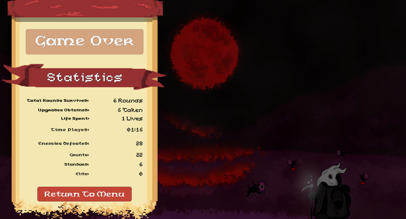
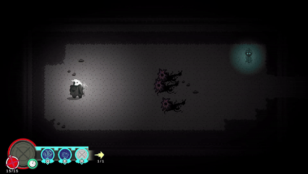
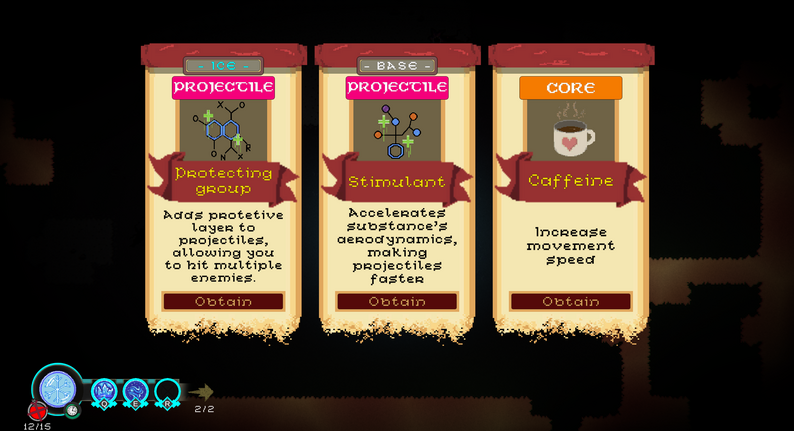
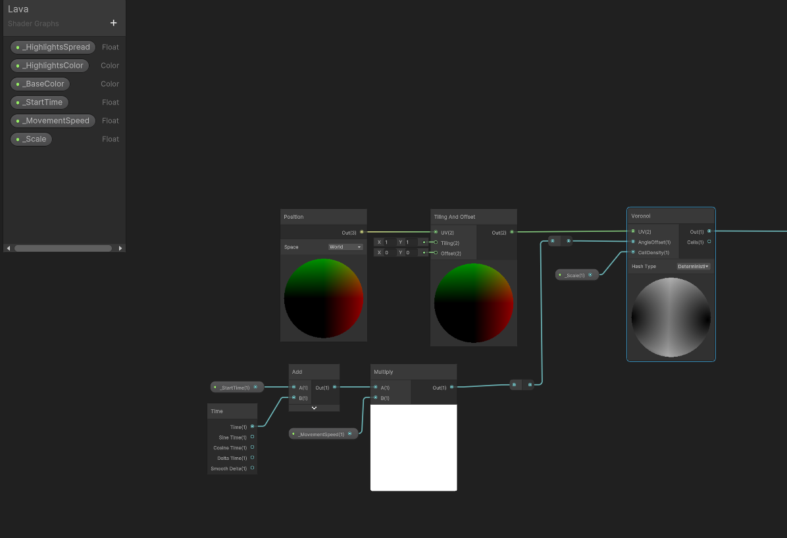
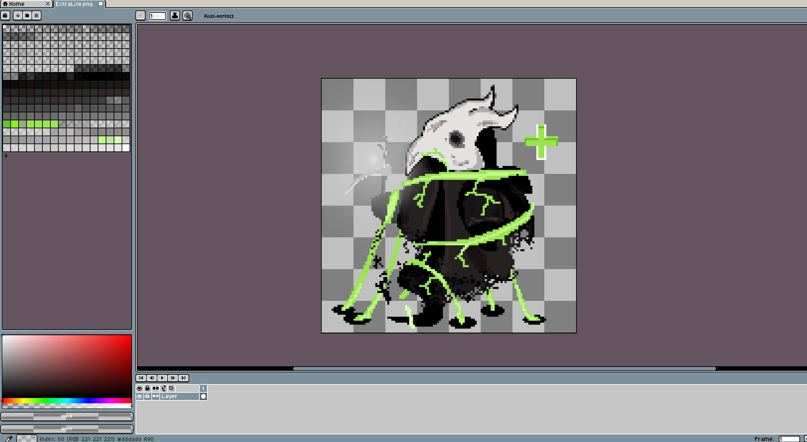
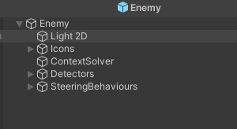
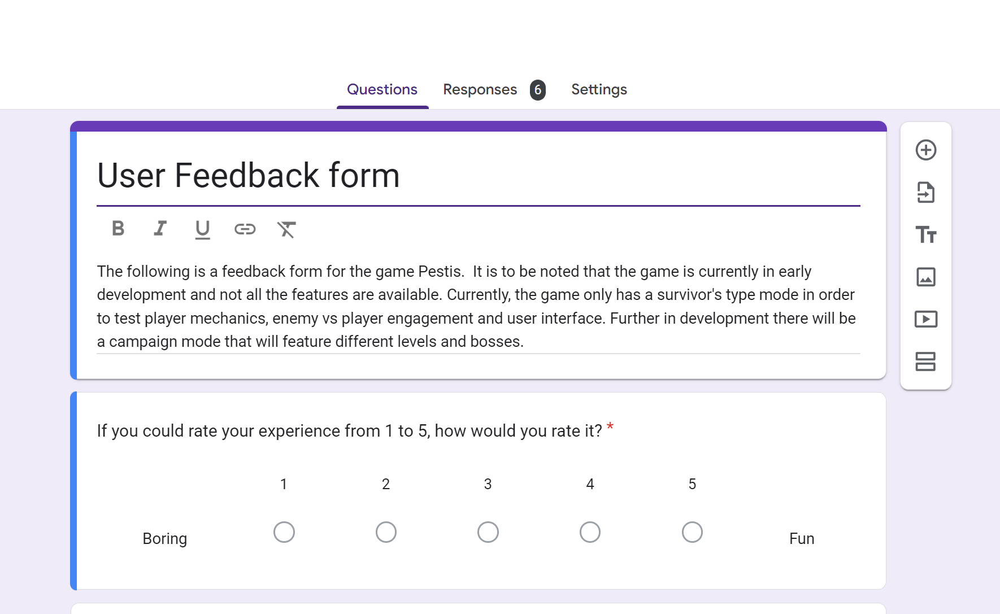

Pestis

Pestis is a top-down, rogue-like game in which you assume the role of a plague
doctor that uses elements and fuses them to defeat aspects of the plague.
This is my very first professional game, which I intend to finish and sell on Steam. Currently I am in very early
development with only a few days in development. Currently there is an early alpha game test available on Itch.io,
which you can access below.
Design Goals
Currently I'm aiming at narrowing down the game to a minimum viable product, focusing mostly on player mechanics and how they
interact with the world. See what works and what doesn't early on in development to improve upon mechanics that need work
and boosting those that are already good.
Further into development I aim to have two different modes. One being a campaign with an average play time between one to two
hours at a minimum. The campaign itself would have boss based dungeons where players will have to fight against different type
of enemies with unique strengths and weaknesses. The design of the levels will adapt to the respective boss's theme.

Second mode, would be an infinite dungeon scroller where players gain upgrades from each room
cleared and bosses are randomize as they spawn every 5 rooms, scaling in power alongside the player.
The main idea behind this game was to try replicate similar games in the genre like "Binding of Isaac" and "Hades" but with a bit
of my own spin to it. I want to be able to improve as a designer, a programmer and a professional and I believe that this
step may be the direction I need.

There are three main abilities, which effects vary depending on the current selected substance. These substances are elements
that have different uses. Either crowd control, straight damage, healing and defense.
These will be obtained throughout the playthrough, with base substance (only substance without any abilities assigned)
as your starting one. Using any ability, apart from base, will drain them. To regain it, players will need to take
down enemies or find other sources of fuel.
The third ability, also refered to as ultimate, will grant the players the power to join substances together and create a new one,
with its own benefits and it will last a certain amount of time until it deteriorates and goes back to normal.

Power-Ups will be rewarded to the player after clearing objectives or rooms. These upgrades will be selected at random,
from a preselected array which will also resize itself to remove upgrades that have reached a certain state to avoid breaking
the game or provide the player with upgrades that are no longer posible due to it being at max capacity.
Power-Ups are divided into core (things that affect player directly, like movement or health), abilities (which will trigger
abilities of a specific substance), projectiles and aura (objects that will be generated around the player).
These upgrades can stack and will be essential for being able to clear higher difficulty areas.
Use of Shaders & Materials

There is no worse thing than dying without knowing why, or not being able to take an enemy that without your knowledge is resistant
to the damage type you are dealing.
It is why I decided to work with Unity's Shader graphs, which allow me to generate visuals without needing to make different sprites
for each thing or even needing to create extra code/assets to convey something as simple as applying burn or regeneration. In addition,
I was able to create eye catching things such as moving lava on the background.
Using shader graphs I also created a flash on enemies when they are hit and for UI elements to indicate an update. Furthermore, as previously noted,
I created different instances of the same sprite of the enemies and player to convey status effects that are currently active.

One of the main personal challenges I decided to impose to myself is to be able to produce everything myself. This meant that I had to
expand my knowledge and capabilities. This lead me to be able to produce sound effects using foley and music, utilizing different programs
and art like the one above utilizing Asperite.
Working on these different things, unlike my other projects where I tried to focus solely in design or programming help me have a different
perspective on game development. Further understanding the value of having a team you can rely on and having someone with some level of
mastery in those areas im not particularly good at.
The whole experience has been quite interesting and overall enjoyable. I am always up for a challenge and things that make me a better
professional.
Programming enemy AI behaviours without a nav mesh was pretty challenging, both to make it work and make it efficient. Making sure
that enemies are able to track players while avoiding obstacles, while not tanking fps if multiple enemies are on screen sounded
like a rather complicated task.
I spent a considerable amount of time researching how to program my own nav mesh, utilizing A-star pathfinding that I learned
in college, or maybe even going as far as making a neural network. All solutions that seem to bring more challenges than quick
and real solutions, I needed something simpler that would allow me to properly spread my time with the great amount of work
that needed to be done.

It was then when I found the following video: Context Steering AI. I modified some
aspects of the code, mostly regarding enemy reactions, I added some scriptable objects for further customization and scrapped certain elements
that were not necessary.
The basic concept of how it works is by having two detectors that will search for targets and obstacles, whether the player is
behind one and determine a path to reach the player by giving weights to different direction, thus finding the quickest and then
taking it. Weight system works exactly the same as what I have previously seen in courses about machine learning and AI, which made
the incorporation of the code and the modification rather simple to debug and work with.
The code itself runs well and does not slow down frames what so ever. In addition to this, instead of running dectection
every frame, the action is performed given a specific time and iterates only if that requirement is met; Thus not overflowing
the update method and reducing performance.

One of the most important, if not the most important, aspect of development for me is player feedback. Since all the effort and
work done loses value if the game itself won't be played by anyone.
It is because of this reason I plan on having constant testing throughout development before even getting close to a final product.
Early testing has helped me before to identify design flaws and mechanics that don't fit the game before they take hours of work to
make.
Within my very first publish, I realise simple mechanic flaws that were completely overlooked by myself. Being a sole developer in this
project, it is easy to overlook problems that could be avoided with multiple eyes on the product. Having the target customer view the product
and provide feedback is essential for the success of my game and my personal growth as a developer and professional.
What to Expect for the Future?
I aim to keep working on the game and see through its development end and publishing. This page will be updated with future
game updates, as well as the Itch.io where anyone will be able to test each iteration and stay in track with development process.